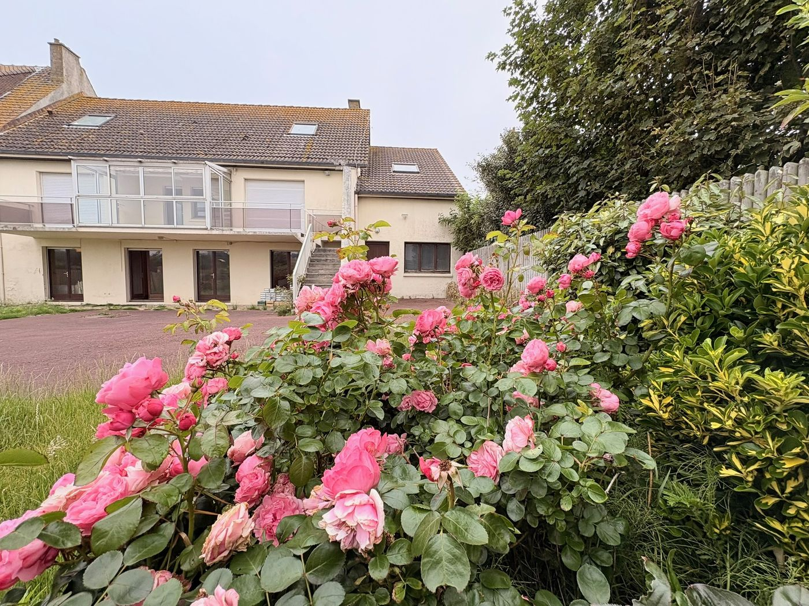
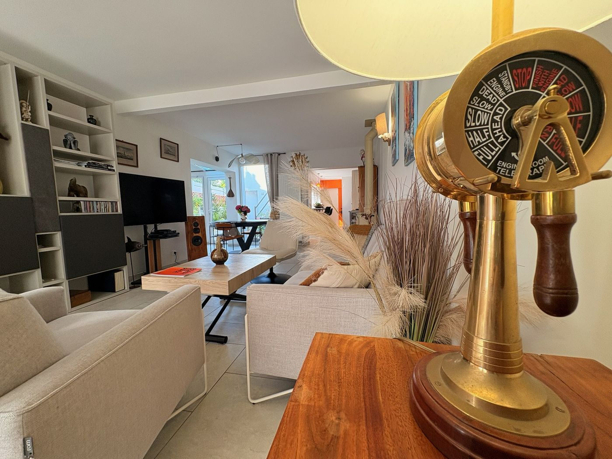

Sélection du moment
Ils cherchent leur famille

Wimereux
Villa plage de Wimereux
167 m² · 5 chambres · terrasse vue mer875 500 €
Samer
Propriété de charme à la campagne
6 chambres · près de 3 hectares695 000 €
Boulogne-sur-Mer
Grande maison vue mer
227 m² · beaucoup de potentiel659 000 € Exclusivité
ExclusivitéBoulogne · Vieille ville
Propriété de charme, cœur historique
330 m² · tout à pied535 600 €
Wimereux
Maison proche plage
102 m² · rénovée · grand garage499 550 €
Cap Gris-Nez